This page is meant as a short introduction to the Alice language and system and its features:
Alice ML is an extension of the Standard ML language (SML). Most of the examples shown here assume a working knowledge of functional programming in general and SML in particular. There are numerous books and tutorials available for SML.
Online Material:
Paper Books:
The definition of the language and its library can be found here:
For a more comprehensive literature list, see the bibliography on the SML/NJ site.
Alice ML is an extension of Standard ML, and the Alice interactive toplevel works very similar to the interactive prompts known from other SML systems, where you can type in expressions and declarations to evaluate them. Input is terminated with a semicolon. For example, you might simply perform a simple calculation:
- 4+5; val it : int = 9
The expression is evaluated and the result 9 printed along with its inferred type int. Anonymous expressions get the name it, so that you can refer to them in consecutive inputs:
- 2*it; val it : int = 18
We can also try the one-line Hello World program:
- print "Hello world!\n"; Hello world! val it : unit = ()
Note: In the rest of this tour we will present program fragments in their pure form, without showing the interactive prompt or the semicolon terminating the interactive input. For example, the last interaction will be displayed simply as
print "Hello world!\n" Hello world! val it : unit = ()
Entering a function declaration is more interesting. For example, the factorial function:
fun fac 0 = 1 | fac n = n * fac (n-1) val fac : int -> int = _fn
This time, the result has a more complex type: it is a function from integers to integers. We can apply that function:
fac 12 val it : int = 479001600
Note: If a computation takes too long you can abort it in the interactive toplevel by entering Ctrl-C (Ctrl-Break on Windows). You can also put it into background with Ctrl-Z (Ctrl-D on Windows). The result of a background computation will be represented by futures, see discussion of concurrency below. The interactive toplevel is exited with Ctrl-D (Ctrl-Z on Windows), or by calling exit().
Depending on the shell used, Ctrl sequences may not work as expected under Windows.
For more complex values, plain static output of the result is often insufficient. The Alice system includes the Inspector for browsing arbitrary data structures interactively:
inspect (List.tabulate (10, fn i => (i, i*i, i*i*i))) val it : unit = ()
An Inspector window will pop up displaying the table of square and cubic numbers:
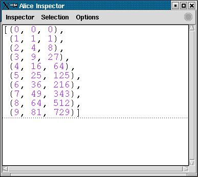
When you inspect additional values, they will be displayed in the same Inspector window. The inspector can be used to browse arbitrary data structures:
val r = ref 56
val r : int ref = ref 56
inspect (3 + 8, SOME 3.141592, {hello = "hello, world"}, r, [true, 4 < 3])
val it : unit = ()
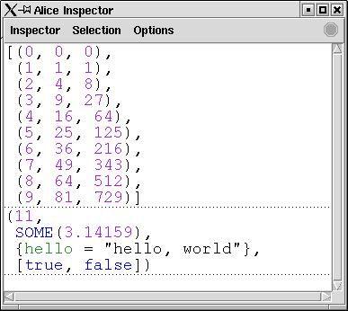
Note: If the size of the inspected data structure exceeds certain configurable limits, parts of the output will be hidden. Those parts are represented by arrows, which can be interactively unfolded if desired.
The Inspector concurrently watches the data structures it shows. If they change, it will notice it and update its display. For example, if you re-assign a reference the Inspector window will be updated automatically:
r := 33033 val it : unit = ()
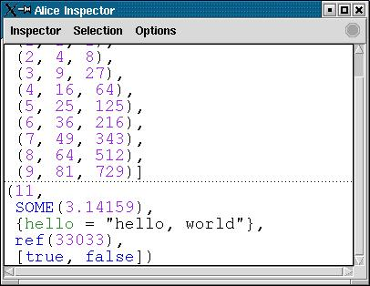
While Standard ML is a fully eager (strict) language, Alice ML provides support for optional lazy evaluation. Any expression can be evaluated lazily by preceeding it with the lazy keyword:
val x = lazy 4+5 val x : int = _lazy
Lazy suspensions are represented by the _lazy notation in the interactive toplevel's output, as shown above. The value of x will not be computed before it is actually required. For example,
(x,x) val it : int * int = (_lazy, _lazy) x val it : int = _lazy x > 10 val it : bool = false x val it : int = 9
Tupling is parametric in its components and does not trigger x. The comparison operator > is strict in its arguments, however, and hence forces evaluation of x. Likewise, pattern matching, arithmetic operations, comparison (op=) or similar operations can force a value.
As a simple example of a lazy function, consider a generator for lazy streams of numbers:
fun enum n = lazy n :: enum (n+1) val enum : int -> int list = _fn val ns = enum 0 val ns : int list = _lazy List.nth (ns,5) val it : int = 5 ns val it : int list = 0 :: 1 :: 2 :: 3 :: 4 :: 5 :: _lazy
In this example, requesting the 5th element of the list forced partial evaluation of the list, up to that element.
We can define a lazy variant of the map function:
fun mapz f xs = lazy (case xs of nil => nil
| x::xs' => f x :: mapz f xs')
val mapz : ('a -> 'b) -> 'a list -> 'b list = _fn
Note that the case expression must be nested inside the lazy expression - otherwise applying mapz would trigger evaluation of the head of the list, to perform the necessary pattern matching. Function declarations support syntactic sugar that allows expressing the same definition more elegantly:
fun lazy mapz f nil = nil
| mapz f (x::xs) = f x :: mapz f xs
val mapz : ('a -> 'b) -> 'a list -> 'b list = _fn
This derived form is defined such that both definitions of mapz are equivalent. Let us apply mapz to the stream of natural numbers to calculate their factorials lazily:
val facs = mapz fac (enum 0) val facs : int list = _lazy List.take (facs,7) val it : int list = [1, 1, 2, 6, 24, 120, 720] facs val it : int list = 1 :: 1 :: 2 :: 6 :: 24 :: 120 :: 720 :: _lazy
Note: The Inspector observes when lazy suspensions are triggered. If you evaluate
inspect facs val it : unit = () List.nth (facs,12) val it : int = 479001600
it will automatically update its window to reflect the substitution of the lazy tail of facs by a (partial) list.
Here is a lazy version of the zip function:
fun lazy zipz (x::xs, y::ys) = (x,y) :: zipz (xs,ys)
| zipz _ = nil
val zipz : 'a list * 'b list -> ('a * 'b) list = _fn
It is possible to calculate the stream of Fibonacci numbers using mapz and zipz:
val rec fibs = 1 :: 1 :: (lazy mapz op+ (zipz (fibs, tl fibs))) val it : int list = 1 :: 1 :: _lazy List.nth (fibs, 10) val it : int = 89 fibs val it : int list = 1 :: 1 :: 2 :: 3 :: 5 :: 8 :: 13 :: 21 :: 34 :: 55 :: 89 :: _lazy
For more practical applications of laziness, see the standard literature on lazy functional programming. Last but not least, note that Alice ML allows laziness to be combined freely with side effects:
val n = lazy (print "Huhu!\n"; 13) val n : int = _lazy n+1 Huhu! val it : int = 14
Alice extends SML with support for concurrency. Concurrency is light-weight: the system can handle tens or hundreds of thousands of concurrent threads. Concurrent programming in Alice is uniformly based on the model of futures.
A concurrent thread can be initiated by means of the spawn expression:
spawn 45*68 val it : int = _future
In this example the value 45*68 is computed in a new thread. The result of the spawn expression is a future, a place-holder for the result of the concurrent computation. Once the result becomes available, the future will be globally replaced by the result. We say that threads are functional, in the sense that they have a result.
Note: If you do not happen to have an ancient machine then you most likely will not have seen the output above, but the result of the computation, because it performed faster than the interactive toplevel was able to print it.
That semantics becomes more obvious if we look at a thread that does not terminate immediately. For that purpose, let us define the naive version of the Fibonacci function, which has exponential complexity:
fun fib (0 | 1) = 1 | fib n = fib (n-1) + fib (n-2) val fib : int -> int = _fn
On an ordinary desktop PC, computing fib 35 will take quite some time. We perform that computation concurrently:
val n = spawn fib 35 val n : int = _future
We get back a future, that we can look at using the Inspector:
inspect n val it : unit = ()
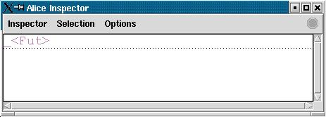
At first, the Inspector will display the value as a future, as shown above. Once the computation of the result finishes and the thread terminates, that future gets replaced by the thread's result. The Inspector will update its display accordingly:
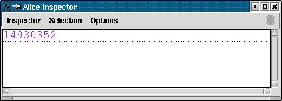
The situation becomes more interesting if we start several threads at once:
inspect (List.tabulate (10, fn i => spawn fib (i+25))) val it : unit = ()
The individual entries from the small table we build are calculated concurrently and become available individually. At some point in time the Inspector window might display the following:
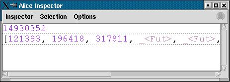
Futures can be passed around like ordinary values. Once an operation actually requests the value the future stands for, the corresponding thread will block until the future vanishes. This is known as data-flow synchronisation and is a powerful mechanism for high-level concurrent programming. As a trivial example, consider the following pair of concurrent producer and consumer that are connected through a message stream:
val delay = Time.fromSeconds (Int.toLarge 2)
val delay : Time.time = time{|2000000us|}
fun produce 0 = []
| produce n = spawn (Thread.sleep delay; n :: produce (n-1))
val produce : int -> int list = _fn
fun consume (n::ns) = (print (Int.toString n ^ "\n"); consume ns)
| consume nil = ()
val consume : int list -> 'a = _fn
spawn consume (produce 5)
val it : unit = _future
5
4
3
2
1
Synchronisation on futures can also be done explicitly, by employing the library function Future.await:
Future.await (spawn fib 30) val it : int = 1346269
Interestingly, lazy suspensions are nothing but a special form of future, called a lazy future. Requesting a lazy future is triggering the corresponding computation. Consequently, Future.await can also be used to trigger lazy computations explicitly:
lazy 3+4 val it : int = _lazy Future.await it val it : int = 7
What happens if a concurrent computation fails, e.g. by raising an exception? In that case the future will be failed. A failed future carries an exception indicating the cause of the failure. A failed future does not cause failure of a client by itself. Only when a client actually requests the failed future, the failure exception will be re-raised at the point of request:
spawn (raise Domain)
val it : 'a = _future
[it]
val it : 'a list = [_failed{|Domain|}]
hd it + 1
uncaught exception Domain
In the second output, the interactive toplevel uses the notation _failed{|exn|} to indicate a future with exception exn.
See the manual page on futures for a detailed discussion of concurrency, futures, and failure.
Dealing with state correctly in a concurrent environment requires the availability of atomic operations. Alice provides an atomic exchange operation for references:
val r = ref 10 val r : int ref = ref 10 Ref.exchange (r, 20) val it : int = 10
The value of the reference is extracted and replaced in one atomic operation. See below for an example relying on this function.
Note: Due to limitations of the Mozart virtual machine, Alice does not yet provide an atomic exchange operation for arrays.
Functional threads and lazy evaluation offer convenient means to create futures "on the fly". Often the direct coupling between a future and the computation delivering its result is too inflexible, however. For such cases, Alice offers promises.
A promise is an explicit handle for a future. When a promise is created,
open Promise
val ...
val ...
...
val p : int promise = promise ()
val p : int Promise.promise = promise{|_future|}
an associated future is created along with it. This future can be obtained as follows:
val x = future p val x : int = _future
Such a promised future behaves like a concurrent future, in particular by allowing dataflow synchronisation. But unlike a concurrent or lazy future it does not vanish automatically, but has to be eliminated explicitly through the corresponding promise:
fulfill (p, 19)
val it : unit = ()
p
val it : int Promise.promise = promise{|19|}
x
val it : int = 19
Intuitively, by creating a future this way, you create a place-holder for a value that you "promise" to deliver at some later point in time. At that point, you "fulfill" your promise. You can also break your promise, by failing the future:
val p : int promise = promise ()
val p : int Promise.promise = promise{|_future|}
fail (p, Domain)
val it : unit = ()
p
val it : int Promise.promise = promise{|_failed{|Domain|}|}
The future will be failed with the exception you pass to the fail function. Any subsequent attempt to request the future will cause raise of that exception, just as a failed concurrent future:
1 + future p uncaught exception Domain
A promise may only be fulfilled or failed once. Hence, a different view on promises is that of a single assignment reference, yielding the following correspondences:
type 'a promise type 'a ref promise : unit -> 'a promise ref : 'a -> 'a ref future : 'a promise -> 'a ! : 'a ref -> 'a fulfill : 'a promise * 'a -> unit := : 'a ref * 'a -> unit
The important point is that a promise is not initialized (hence the difference in the constructor types), and dereferencing it prior to assignment delivers a place holder for its potential content.
Usage of promises is not necessarily related to concurrent programming. One application is the top-down construction of data structures, as opposed to the bottom-up construction usually required in functional programming. As a simple example of that we show how promises can be utilised to program a tail-recursive version of the list append function:
fun append (l1,l2) =
let
fun iter (nil, p) = fulfill (p, l2)
| iter (x::xs, p) =
let
val p' = promise ()
in
fulfill (p, x::future p'); iter (xs, p')
end
val p = promise ()
in
iter (l1, p); future p
end
val append : 'a list * 'a list -> 'a list = _fn
The basic idea of this formulation of append is to cons the head of the left operand to a future in each iteration. That future gets replaced by the actual tail in the next iteration, with the tail again containing a future as its respective tail. When we reach the end of the list, the last future gets replaced by the right operand.
In a similar vein, arbitrary data structures can be generated in a top-down manner by creating promised futures as place holders for parts of it and construct them afterwards. This is reminiscent of techniques from logic programming.
Still, the primary purpose of promises is to provide a simple primitive that enables high-level concurrent programming. We only give an idea of that here, by showing how they can encode another well-known concurrency idiom easily: channels.
A channel (sometimes also called a port) is a simple imperative message queue that allows asynchronous communication between processes. As an abstract data type it can be described by the following signature:
signature CHAN =
sig
type 'a chan
val chan : unit -> 'a chan
val put : 'a chan * 'a -> unit
val get : 'a chan -> 'a
end
An arbitrary number of messages may be sent to a channel using put. The get operation takes the oldest message out of the channel. It suspends if none is available. A more advanced design might distinguish between read and write view of a channel, but we chose to ignore that here for the sake of simplicity.
A straight-forward implementation uses promises and references:
structure Chan :> CHAN =
struct
open Promise
type 'a chan = 'a list promise ref * 'a list ref
fun chan () =
let
val p = promise ()
in
(ref p, ref (future p))
end
fun put ((putr,getr), x) =
let
val p' = promise ()
val p = Ref.exchange (putr, p')
in
fulfill (p, x::future p')
end
fun get (putr, getr) =
let
val p' = promise ()
val xs = Ref.exchange (getr, future p')
in
fulfill (p', tl xs); hd xs
end
end
The implementation is a variation of a difference list: the first reference stores the tail of the queue ("write position"), while the second points to the head ("read position"). Modification of either position is performed by an atomic exchange operation on the respective reference. That ensures that all operations are properly sequentialized.
The tail is represented as a promised future. As in the append example from the previous section this allows constructing the message queue incrementally in the put function.
By using a promised future in the implementation of get we can use atomic exchange although the new value actually depends on the previous one. Any concurrent get operation will block automatically (in tl) until the future is eliminated by fulfilling the promise. Consequently, no get operation can proceed before the former has determined the new queue. That ensures thread-safety.
Likewise, when the queue is empty, get encounters a future for xs and will block. This time, the future is eliminated by the next put operation.
Let us create a channel and observe its content using the Inspector:
val ch : int Chan.chan = Chan.chan () val ch : int Chan.chan = _val inspect ch val it : unit = ()
Note: The interactive top-level prints the channel value as _val, indicating an abstract type that cannot be shown. The Inspector allows looking at values of abstract type, however.
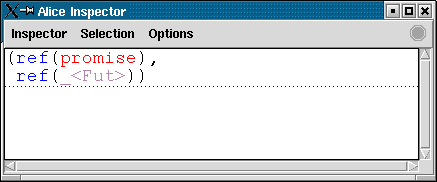
Chan.put (ch, 17); Chan.put (ch, 6) val it : unit = ()
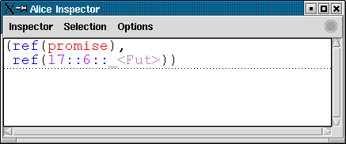
(Chan.get ch, Chan.get ch) val it : int * int = (17, 6)
Tuples are always evaluated from left to right, so we will deterministically get the pair (17,6) in the last example. To witness non-determinism due to concurrency, let us set up several clients. They perform an expensive calculation before reading from the channel, in order to properly randomize thread scheduling:
fun client _ = spawn (fib 20; Chan.get ch) val client : 'a -> int = _fn inspect (List.tabulate (5, client)) val it : unit = () Chan.put (ch, 1); Chan.put (ch, 2); Chan.put (ch, 3) val it : unit = ()
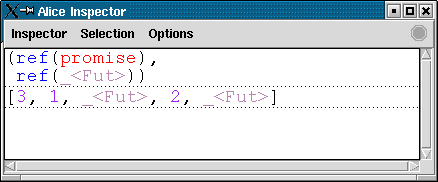
The order in which the threads will read from the channel is non-deterministic, but no value will ever get lost or read twice.
There is a small interactive demo demonstrating dataflow synchronisation using streams:
Compile with:
alicec streams.aml
Run with:
alicerun streams
Its powerful static type system is one of the major pros of ML. However, there are programming tasks where it is not possible to perform all typing statically. For example, consider exchange of data structures between separate processes. To accompony such tasks of open programming, Alice complements its static type system with a controlled form of dynamic typing.
Alice provides the type package of dynamically typed values. A package essentially is a pair of a (higher-order) module and its signature. Packages are created using the pack expression:
val p = pack Word8 : WORD
val p : package = package{|...|}
This example injects the module Word8 into a package. The signature constraint (the part following the colon) is part of the pack expression. It specifies the package's signature. The packaged module must of course match that signature statically.
The package p may be passed to some client, which may unpack it as follows:
structure Word' = unpack p : WORD structure Word' : WORD
The unpack expression also requires a signature being specified. Unpacking involves a dynamic type check: to evaluate the expression, the package signature is matched against the specified target signature. If matching succeeds, the packaged module is returned. Otherwise, an exception is raised:
structure List' = unpack p : LIST uncaught exception Mismatch
If unpacking succeeds, the client may use the Word' structure as usual. The static signature of Word' is determined by the target signature specified with unpack.
Since modules can contain arbitrary values, any value can be wrapped up as packages. In particular, values can be given polymorphic type in packages:
val p = pack (val x = length) : (val x : 'a list -> int)
val p : package = package{|...|}
This example uses some syntactic sugar of Alice ML, which allows replacing struct...end and sig...end by (...).
Unpacking may specify a more restrictive target signature:
structure IntLength = unpack p : (val x : int list -> int) structure IntLength : sig val x : int list -> int end structure RealLength = unpack p : (val x : real list -> int) structure RealLength : sig val x : real list -> int end
The whole range of SML signature matching rules applies, so a package may have more components than required by the target signature, may have more general value types, or more specific type components, etc. Using packages hence is quite robust with respect to extensions.
See the respective manual page for a more detailed look at the semantics of packages. Packages are the basis of several other features of Alice, in particular pickling and distribution.
Applications rarely run in isolation. Many applications need to exchange data with other applications, or make data persistent between runs. Consequently, it should be possible to export and import data from processes. Export of language data structures is often known as serialization, or pickling.
Alice provides high-level support for pickling. Arbitrary data structures may be pickled. Pickles are platform-independent and are hence suitable for exchange across heterogenous networks, especially the Internet.
Since Alice ML is a functional language with first-class functions, pickling is not restricted to conventional data but naturally includes the ability to pickle functions. Like with other data, pickles containing functions are platform-independent. This enables processes to exchange arbitrary procedures, i.e. code.
The pickling library is based on packages. Consequently, the entities of import/export are modules. This implies that even types and signatures can be exchanged between processes. Consider a very simple abstract type as an example:
signature NUM =
sig
type t
fun fromInt : int -> t
fun toInt : t -> int
fun add : t * t -> t
end
signature NUM =
sig
type t
val fromInt : int -> t
val toInt : t -> int
val add : t * t -> t
end
structure Num :> NUM =
struct
type t = int
fun toInt n = n
fun fromInt n = n
val add = op+
end
structure Num : NUM
Note: For values of abstract type the toplevel prints placeholders only. However, the function Print.register can be used to install a user-defined printer for abstract types, e.g.
Print.register (Int.toString o Num.toInt)enables the toplevel to print values of type Num.t in integer representation.
A package can be formed from this structure and be written to a file:
Pickle.save ("Num." ^ Pickle.extension, pack Num : NUM)
val it : unit = ()
To recover the structure in another (or the same) process, one simply executes the inverse operation:
structure Num' = unpack Pickle.load ("Num." ^ Pickle.extension) : NUM
structure Num' : NUM
Num'.toInt (Num'.add (Num'.fromInt 4, Num'.fromInt 5))
val it : int = 9
Note that the type Num'.t is incompatible with the original type Num.t:
Num'.add (Num.fromInt 4, Num.fromInt 5) 0.0-0.39: argument type mismatch: Num.t * Num.t does not match argument type Num'.t * Num'.t because type Num.t does not unify with Num'.t
The reason is that the signature at the unpack operation does not specify the necessary type equivalence - the types are statically incompatible, although they are known to be the same dynamically. The usual means of expressing type sharing can be used if that is not desired:
structure Num' = unpack Pickle.load ("Num." ^ Pickle.extension) : NUM where type t = Num.t
structure Num' :
sig
type t = Num.t
val fromInt : int -> Num.t
val toInt : Num.t -> int
val add : Num.t * Num.t -> Num.t
end
The result signature already indicates the type sharing, making legal
Num'.add (Num.fromInt 4, Num.fromInt 5) val it : Num'.t = _val
Note however, that the type Num'.t is still abstract and incompatible to int:
Num'.add (4, 5) v1.0-1.15: argument type mismatch: int * int does not match argument type Num'.t * Num'.t because type int does not unify with Num'.t
See the manual page on pickling for more detail on the semantics of pickling.
Alice introduces the notion of component as the unit of compilation, as well as deployment. Superficially, a component contains a module that imports modules from other components to perform its job. An application will consist of a set of components with one designated "main" component.
Consider the following trivial component:
(* Fac.aml *)
structure Fac =
struct
val _ = print "Evaluating component Fac...\n"
fun fac 0 = 1
| fac n = n * fac (n-1)
end
We can compile it invoking the Alice batch compiler from a shell:
alicec Fac.aml
If the interactive toplevel has been started in the same directory, the compiled component can be imported interactively:
import "Fac" ### loaded signature from file:/home/user/Fac structure Fac : sig val fac : int -> int end = Fac
Loading is performed lazily: the interactive toplevel will load the signature from the component file, but it will not yet evaluate (execute) the component. This is appearent from the fact that the message contained in the structure has not been printed in the above example. We can also see it when accessing a structure field:
Fac.fac val it : int -> int = _lazy
The function is represented by a lazy future. The component will be evaluated when its content is first requested:
Fac.fac 11 Evaluating component Fac... val it : int = 39916800 Fac.fac 10 val it : int = 3628800
Let us write a little application using the Fac component. We simply implement an appropriate main component:
(* Main.aml *)
import structure Fac from "Fac"
structure Main =
struct
fun main () =
let
val _ = TextIO.print "Input number: "
val n = valOf (Int.fromString (valOf (TextIO.inputLine TextIO.stdIn)))
in
TextIO.print (Int.toString (Fac.fac n) ^ "\n");
OS.Process.success
end
handle _ => (TextIO.print "error\n"; OS.Process.failure)
val _ = OS.Process.exit (main ())
end
This component imports the structure from the previous component by using an import announcement. Every component can be headed by an arbitrary number of such import announcements. The Main component is compiled as before:
alicec Main.aml
Note that the compiler needs to access all compiled components that are imported, in order to perform its type checking (that also is the reason why the interactive toplevel had to load the signature of component Fac). We can run our little application using the Alice virtual machine:
alicerun Main Input number: 8 Evaluating component Fac... 40320
You can again observe that imports are performed lazily. If the Fac component is never accessed, it will not be loaded at all:
alicerun Main Input number: gnalp error
A component carries its signature and the signatures of all its imports. You can inspect them using the Alice linker:
alicelink -d Main
import
structure TextIO :
sig
type instream
val inputLine : instream -> string option
val stdIn : instream
val print : string -> unit
end
from "x-alice:/lib/system/TextIO"
import
structure OS :
sig
structure Process :
sig
type status
val success : status
val failure : status
val exit : status -> 'a
end
end
from "x-alice:/lib/system/OS"
import structure Fac : sig val fac : int -> int end from "Fac"
structure Main : sig val main : unit -> OS.Process.status end
The output first lists all imports required by the component (which includes necessary parts of the library) and then the signature of its own export - in this case the last line. Note that import locations are actually denoted by URLs. In this tutorial we will only make use of file URLs, but components can actually be imported from arbitrary locations via HTTP or FTP protocol.
Before a component is evaluated at runtime, its export signature is matched against the import signature of the component that imports and requests it. If that match fails, all references to items from the component are replaced by failed futures. We can observe this if we modify and recompile our Fac component in an incompatible way without adapting Main:
(* Fac.aml modified *)
structure Fac =
struct
val _ = print "Evaluating component Fac...\n"
fun fac (0,n) = n
| fac (i,n) = fac (i-1, i*n) (* tail-recursive *)
end
An attempt to run the application without adapting Main properly will cause a runtime failure:
alicec Fac.aml alicerun Main Input number: 20 Evaluating component Fac... error
An application that strives to be robust against such failures should handle the corresponding exceptions. See the manual pages on components for more details.
A way to avoid such errors is to statically link all components of the application using the static linker:
alicelink --include ./ ./Main -o LinkedMain.acl alicelink: signature of component ./Fac does not match import requirement of component ./Main Try recompiling the latter.
Oops! The linker verifies that all import/export signatures are compatible. Of course, this is not the case since we intentionally made Fac incompatible. Recompiling Main, as the linker suggests, will not help either in this case.
But if we revert Fac to its original form and recompile it, the linker will happily accept it:
alicec Fac.aml alicelink --include ./ ./Main -o LinkedMain.acl
The linker builds a new component that bundles all components that are directly or indirectly imported by the root component given on the command line - in this case, Main - and that match the include pattern specified. See the manual page for details.
There is a close connection between components and pickles. Actually, they are interchangable: a pickle containing a structure can be imported as a component; a component can be loaded as a pickle. The latter will automatically evaluate the component.
That close connection allows us to construct precomputed components by writing a component that computes it and writes it into an appropriate pickle. For example:
structure Fac50 = struct val x = Fac.fac 50 end
structure Fac50 : sig val x : int end
Pickle.save ("Fac50." ^ Component.extension,
pack (structure Fac50 = Fac50)
: (structure Fac50 : sig val x : int end))
val it : unit = ()
Assume that calculating the factorial of 50 is an expensive computation. We have now performed it statically and generated a component that exports the result as a value. We may import it as usual:
import structure Fac50 from "Fac50" ### loaded signature from file:/home/rossberg/Fac50 structure Fac50 : sig val x : int end = Fac50 Fac50.x val it : int = _lazy Future.await Fac50.x val it : int = 30414093201713378043612608166064768844377641568960512000000000000
A pickle contains an evaluated component. Evaluated components are closed, i.e. they never depend on any import:
alicelink -d Fac50 structure Fac50 : sig val x : int end
The linker shows that there is only an export signature to this component. See the manual pages on components for more information on evaluated components.
Linking of components is handled by the system's component manager. Applications may configure the component manager and the attached resolver to adapt to their needs, or may even set up their own component managers. Component managers essentially allow to achieve what is often called sandbox security for untrusted components. See the library reference for more detail.
The implementation of an interpreter for a simple functional language demonstrates how an application can be divided into components:
See readme.txt for build instructions.
Components and pickles already provide a primitive form of distributed programming, since they may be imported or loaded from arbitrary locations across a local network or even the Internet. But Alice also provides high-level means for processes at different sites to communicate directly.
The first mechanism that allows sites to establish peer-to-peer connections is offer and take. A process can create a package and make it available to other processes, for example the Num structure from the previous section:
val t = Remote.offer (pack Num : NUM) ### loaded signature from x-alice:/lib/distribution/Remote val t : ticket = "http://134.96.18\..."
Offering a package opens a communication port and returns an URI for that port. The URI is called a ticket. A ticket can be transferred to other sites, say by email or through some web document or root site. Other sites can then obtain the available package using the ticket. Of course, the exporting site may also obtain it itself (which we will do in this interactive example for the sake of simplicity):
val p = Remote.take t
val p : Package.package = package{|...|}
structure Num' = unpack p : NUM
structure Num' : NUM
Num'.toInt (Num'.fromInt 444)
val it : int = 444
In general, take establishes a connection to the communication port denoted by the ticket, and retrieves the offered package. Transfer of the package is defined by the pickling/unpickling semantics, i.e. the whole closure of the package is transferred to the client, including any code representing embedded functions.
Tickets are intended merely as a means to establish an initial connection between sites. All subsequent communication should be dealt with by the functions in the offered package. Alice provides a very simple feature to enable this idiom: proxies. A proxy is a mobile reference to a stationary function, that can be used in place of the function it references.
The library function proxy: ('a->'b) -> ('a->'b) creates a proxy for an arbitrary function:
fun fib (0 | 1) = 1 | fib n = fib (n-1) + fib (n-2) val fib : int -> int = _fn val fib' = Remote.proxy fib val fib' : int -> int = _fn
The resulting function has the same type as the function it references. When it is applied, all arguments are forwarded to the original function, and the result is transferred back:
fib' 20 val it : int = 10946
However, pickling a proxy does only pickle the respective reference and not the referenced function itself. When the proxy is transferred to a different site - e.g. by offering it as part of a package - and then applied at that site, all arguments will be automatically transferred to the site hosting the referenced function, the result will be computed there, and finally transferred back to the client site. That is, applying a proxy is practically a remote procedure call (RPC). Transfer is again defined by pickling semantics.
As a most general example consider a compute server, a server which offers its computational resources to clients. Such a server can be described by the following signature:
signature COMPUTE_SERVER =
sig
val compute : ('a -> 'b) * 'a -> 'b
end
It can be given a function and an appropriate argument and it will compute the result of applying the function to the argument.
Such a server is easily set up by packaging the straight-forward implementation of this signature and offering it to other processes. Note the use of a proxy:
structure ComputeServer : COMPUTE_SERVER =
struct
val compute = Remote.proxy (fn (f,x) => f x)
end
structure ComputeServer : sig val compute : ('a -> 'b) * 'a -> 'b end
val ticket = Remote.offer (pack ComputeServer : COMPUTE_SERVER)
val ticket : ticket = "http://134.96.18\..."
Assume that the local HTTP server's domain is www.mydomain.net and the root of its document tree is in directory /www of the local file system. The server may store the ticket as a WWW document:
Pickle.save ("/www/computeserver.ticket", pack (val x = ticket) : (val x : string))
val it : unit = ()
A client can retrieve the (dynamically created) ticket from the (statically known) ticket URL:
structure Ticket = unpack Pickle.load "http://www.mydomain.net/computeserver.ticket" : (val x : string) structure Ticket : sig val x : string end
It can then establish a connection by taking the offered package and unpacking it under the agreed-upon signature:
structure Server = unpack (Remote.take Ticket.x) : COMPUTE_SERVER structure Server : COMPUTE_SERVER
Using the Server stub the client can shift its comutational load to the compute server:
Server.compute (fib, 30) val it : int = 1346269
The application transfers the function fib, as well as the argument 30, to the server, which evaluates it. When it is done, it returns the result.
It is important to note that only establishing the initial connection requires a dynamic type check with this idiom! All subsequent uses of the transferred structure in general, and the contained proxy in particular do not require any check. Communication via proxies is always statically type-safe!
You will have noticed that the remote call to the server is synchronous, i.e. the client will not proceed before the server delivers the result. However, a synchronous call can trivially be transformed into an asynchronous one using functional threads!
spawn Server.compute (fib, 30) val it : int = _future
Functional threads and futures hence are a high-level mechanism to improve lag latency in distributed applications - a client can proceed concurrently to the server and has to suspend only when it actually requires the result of a remote operation that the server has not yet delivered.
Sometimes applications themselves need to create new processes at remote sites. This is known as remote execution. Remote execution can be initiated using the Execute library functor. See the respective manual page for more about distribution in general and remote exection in particular.
Alice ML provides full support for state-of-the-art constraint programming technology. Constraint-based problem solving is a technique for solving hard combinatorial problems that can be stated as variables ranging over a finite domain of non-negative integers, or sets thereof. Problems in this class range from puzzles to real world applications as diverse as scheduling, ware house allocation, configuration and placement.
Let us take a first look at programming with finite domain constraints. A finite domain (FD) is a set of natural (non-negative integer) numbers. An FD constraint is a formula in predicate logic, containing variables ranging over the natural numbers. In particular, a domain constraint is a constraint that restricts the domain of a particular variable. A finite domain problem is a finite set of quantifier-free constraints that contains a domain constraint for every variable occurring in it. A solution is a variable assignment that satisfies every constraint of the problem.
Let us create some finite domain variables. We use the Linear library for linear constraints:
open Linear ### loaded signature from x-alice:/lib/constraints/Linear ...
To create a vector of constraint variables x,y,z, the vec function can be used:
val #[x,y,z] = vec (3, [1`#10]) val x : term = FD (_val) val y : term = FD (_val) val z : term = FD (_val)
The arguments to vec specify the number of constraint variables (the size of the vector) and the initial domain {1,...,10} of each of these variable. Every constraint variable must be created specifying such a domain constraint. Constraint variables can be investigated using the Inspector:
inspect {x,y,z}
val it : unit = ()
For each variable, the Inspector shows the current set of values that still might form a solution. The set of values still considered for a variable is called its domain. Since we have not yet posted any constraints, the domains are given by the initial domain constraints on the variables. The set of all constraint variables and their domains is called the constraint store.
The solution set can be restricted by posting constraints. For example, we can require that 2x = y:
post (`2 `* x `= y) val it : unit = ()
Note: Be aware of the backquotes prefixing numbers and operators in the constraint formula - `* and `= are infix functions, while the backquote preceeding the literal 2 is an ordinary nonfix function.
The posted constraint will exclude certain values from the solution set. This is reflected by shrinking the domains of the respective constraint variables. After posting the above constraint, the Inspector recognizes that the domains of the displayed constraint variables have changed and updates its display accordingly:
Adding a constraint can affect the domain of variables that do not even occur in its formula, because information will be propagated in the constraint store so that additional information can be inferred in combination with other posted constraints:
post (z `< x) val it : unit = ()
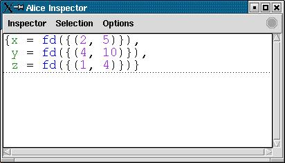
post (y `< `7) val it : unit = ()
The information encapsulated in the constraint store grows monotonically. A variable is determined if its domain is reduced to a singleton set. A solution is found when all variables are determined.
post (z `<> `1) val it : unit = ()
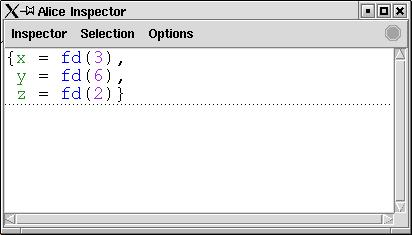
Constraint propagation is not a complete solution method. It may happen that a problem has a unique solution and that constraint propagation does not find it. In those cases it is necessary to combine constraint propagation with search. Alice hence also provides support for powerful, user-definable search techniques. For a more thorough introduction to constraint programming, we refer to the Oz Finite Domain Constraint Programming Tutorial. All constraint programming functionality from Oz is available in Alice.
As a simple example of a complete program solving a finite domain problem, consider the Send More Money problem. It consists in finding distinct digits for the letters S, E, N, D, M, O, R, Y such that S and M are different from zero (no leading zeros) and the equation
SEND + MORE = MONEY
is satisfied. The unique solution of the problem is 9567 + 1085 = 10652.
Using Alice, the problem can be solved as follows. First, we have to define a so-called script that encodes the problem:
fun money () =
let
val v as #[S,E,N,D,M,O,R,Y] = vec (8, [0`#9])
in
distinct v;
post (S `<> `0);
post (M `<> `0);
post (`1000`*S `+ `100`*E `+ `10`*N `+ D `+
`1000`*M `+ `100`*O `+ `10`*R `+ E `=
`10000`*M `+ `1000`*O `+ `100`*N `+ `10`*E `+ Y );
distribute (FD.FIRSTFAIL, v);
{S,E,N,D,M,O,R,Y}
end
val money :
unit -> {D : term, E : term, M : term, N : term, O : term, R : term, S : term, Y : term} = _fn
The Send More Money problem cannot be solved using constraint propagation alone. Search is required to reduce the problem space until constraint propagation is able to determine the solution. The distribute function in the script specifies the distribution strategy used when the problem space has to be split for search. See the Mozart Constraint Programming Tutorial for more detail.
To perform the actual search and obtain all solutions to the problem, predefined search engines can be used:
Search.searchAll money
val it :
{D : term, E : term, M : term, N : term, O : term, R : term, S : term, Y : term} list =
[{D = FD (_val), E = FD (_val), M = FD (_val), N = FD (_val), O = FD (_val),
R = FD (_val), S = FD (_val), Y = FD (_val)}]
Using the inspector, we can easily look at the solution:
inspect it val it : unit = ()
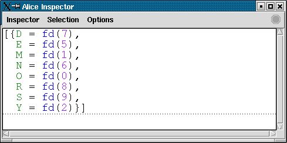
An alternative way to obtain the solutions is by interactively exploring the search tree induced by the script using the Explorer:
Explorer.exploreAll money val it : unit = ()
Double-clicking on the only solution node in the search tree (the green diamond) will open an Inspector window displaying the variable assignments of the solution. Chosing an inner node will display the information available at the respective point of the search tree.
The Alice compiler generates Oz pickled functors (.ozf files). The Alice virtual machine is essentially a slightly beefed-up version of the Mozart VM. As such, it can also run ordinary Oz applications.
More importantly, it is easily possible to create mixed Alice/Oz applications. Oz code can import Alice functors as if they were Oz functors. Alice can import Oz functors, if given an additional signature description file, which specifies the types of the entities imported.
The possibility to mix Alice and Oz provides a smooth migration path for Oz projects that want to use Alice. It also allows escaping the statically typed world of ML for arbitrary subsystems, where that may be desirable. See the manual page on interoperability for more detail.